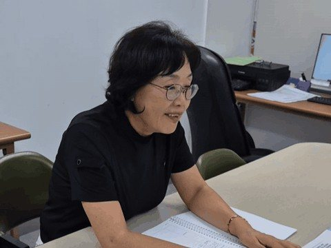
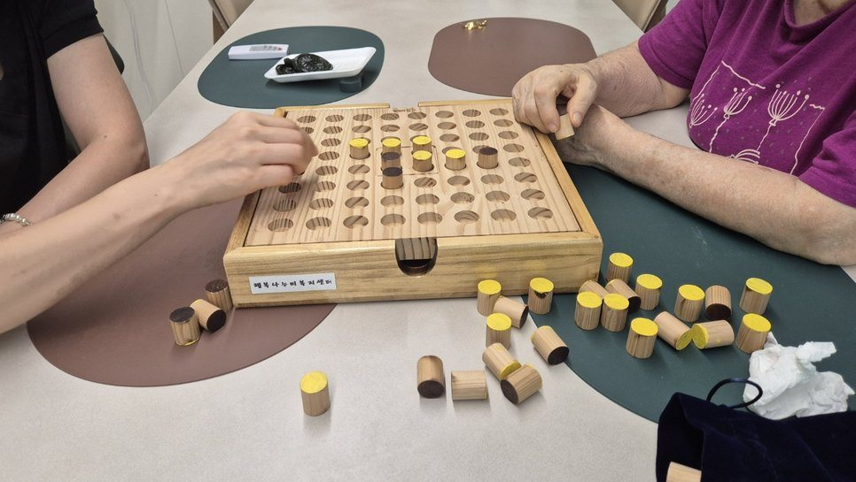

광주 광산구 신창동 · 부모님 돌봄을 알아보기 시작하셨다면
방문요양, 정리 안 된 채로
물어보셔도 됩니다
장기요양등급이 아직 없어도 상담할 수 있습니다. 시작하기 전에 교구 인지활동 · 식단 계획표 · 생활 속 낙상예방을 방문 계획에 담습니다.
문자 010-9884-2040 · 편하신 연락 시간을 남겨 주셔도 됩니다 · 상담 시간 카카오톡 채널

방문요양을 알아보실 때
이런 걱정이 있으시다면
하루 몇 시간 오시는 걸로 뭐가 달라질까…
시작 전에 정하는 세 가지 ↓등급도 아직 안 나왔는데, 전화부터 해도 되나…
첫 상담은 이렇게 ↓시작했다가 우리 집이랑 안 맞으면 어쩌지…
맞지 않을 때는 ↓
방문 계획
시작하기 전에
세 가지를 정합니다
방문하는 시간에 무엇을 할지, 계약하실 때 방문 계획에 이 세 가지를 담습니다.

교구 인지활동 · 약 20분
어르신의 상태에 맞춰 다양한 교구를 활용한 인지활동을 함께합니다.
균형 잡힌 식단 계획표
균형 잡힌 식생활을 이어가실 수 있도록 식단 계획표 제공과 실천을 돕습니다.
생활 속 낙상예방
어르신의 생활공간에서 낙상 위험 요소를 살피고 더 안전한 일상생활을 돕습니다.
왜 방문요양을 시작했나
상담에서 무엇을 먼저 묻나
센터장 소개 실명 · 직함
사람마다 필요한 도움이
다르다는 것을 압니다
학원에서 30년 동안 학부모님들의 이야기를 들었습니다. 노인복지 바우처 사업 10년 동안 배운 것은 사람마다 필요한 도움이 다르다는 것이었습니다.
- 노인복지 바우처 사업 10년
- 2026년 1월 개원
첫 상담
첫 상담은
이렇게 진행됩니다
상담을 받았다고 계약해야 하는 것은 아닙니다.
(고객 게시 동의 확인 후)
해 드리는 것과 못 하는 것을
먼저 말씀드립니다
✓ 방문요양이 해 드리는 것
- 정한 시간에 댁으로 방문해 신체활동 지원(세면·식사 도움 등), 인지활동 지원, 정서 지원, 가사 및 일상생활 지원(취사·청소·세탁 등)을 합니다
- 방문 때 한 일은 급여제공기록지로 정기적으로 받아 보실 수 있습니다(주 1회 이상, 전자 전송 시 월 1회 이상)
- 등급 신청 순서와 준비 서류를 안내해 드립니다
✕ 방문요양만으로는 어려운 것
- 방문요양은 정한 시간에 오는 돌봄입니다. 그 밖의 시간은 가족 돌봄이나 다른 급여와 함께 계획하셔야 합니다
- 가사 지원은 어르신 본인을 위한 것만 가능합니다. 다른 가족의 식사·빨래는 해 드릴 수 없습니다
- 등급별 월 한도액을 넘는 이용분은 전액 본인부담입니다
- 복지용구 판매·대여는 하지 않습니다
- 등급은 국민건강보험공단 등급판정위원회가 판정합니다. 센터가 정해 드릴 수 없습니다
선생님이 맞지 않을 때
말씀하시기 어려운 일이라는 것을 압니다. 센터로 연락 주세요.
교체 요청을 받는 방법과 처리 순서 · 계약 변경 안내 문구자주 묻는 질문
장기요양등급이 없어도 상담할 수 있나요?
네. 행복나누미케어센터는 등급이 나오기 전에도 상담합니다. 등급 신청 순서와 준비 서류부터 함께 짚어 드립니다.
낯선 사람을 꺼리시는 어르신은 첫 방문을 어떻게 하나요?
첫 방문 때 누가 함께 가는지 · 어르신이 거부하실 때 센터의 처리 순서
혼자 사시는데, 등급 결과가 나오기 전에도 이용할 수 있나요?
함께 사는 가족이 없거나, 함께 사는 가족이 미성년자 또는 65세 이상 어르신뿐이라면 신청서를 낸 날부터 장기요양급여를 받을 수 있는 예외가 있습니다. 증명서류를 붙여 국민건강보험공단에 따로 신청하고, 공단이 확인해 결정합니다.
최근에 넘어지셔서 치료 중인데, 지금 등급을 신청해도 되나요?
신청 시기는 국민건강보험공단(1577-1000, 장기요양 상담)에 먼저 문의하시는 것이 좋습니다. 등급은 「6개월 이상 혼자서 일상생활을 하기 어려운지」를 보고 판정하는데, 골절·수술 직후처럼 회복 중이시면 이 판단이 달라질 수 있습니다.
방문요양 비용은 어떻게 정해지나요?
급여비용은 보건복지부가 매년 고시하고, 본인부담률은 법령으로 정해져 있습니다. 재가급여 본인부담은 급여비용의 15%입니다. 의료급여 1종 수급자는 부담이 없고, 법령이 정한 감경 대상(그 밖의 의료급여 수급권자, 보험료 기준 이하인 분 등)은 6% 또는 9%로 줄어듭니다. 등급별 월 한도액을 넘는 부분과 급여 범위 밖의 비용은 전액 본인부담이며, 야간·일요일·공휴일 방문은 급여비용이 가산됩니다.
비급여 항목이 있는지, 있다면 항목별 비용
요양원(시설)은 몇 등급부터 이용할 수 있나요?
장기요양 1·2등급은 재가급여와 시설급여 중에서 고를 수 있고, 3~5등급은 재가급여를 이용합니다. 다만 3~5등급이라도 ① 주로 돌보는 가족이 수발하기 어렵거나 ② 주거환경이 열악해 입소가 불가피하거나 ③ 치매 등에 따른 문제행동으로 재가급여를 이용할 수 없어 등급판정위원회가 시설급여가 필요하다고 인정하면 시설급여를 이용할 수 있습니다. 인지지원등급은 주·야간보호, 단기보호, 종일 방문요양, 기타재가급여만 이용할 수 있습니다.
등급을 받았으면 계약하러 갈 때 무엇을 챙기나요?
장기요양인정서와 개인별장기요양이용계획서를 함께 가져오시면 됩니다.
어느 지역까지 방문하나요?
광주 광산구 신창동·수완·운남동 인근을 중심으로 방문합니다.
전체 방문 권역
집에서 모실지 시설이 나을지는
어르신 상태와 가족 사정에 따라 다릅니다.
아직 정하지 못하셨어도, 지금 상황부터 들려주세요.
문자로 편하신 연락 시간을 남겨 주셔도 됩니다.
연락처·위치
행복나누미케어센터
- 주소전남광주통합특별시 광산구 신창동 1125-3, 4층
- 전화062-419-1754
- 문자010-9884-2040
- 상담 시간요일 · 시간
- 권역신창동·수완·운남동 인근
Google 지도에서 보기 · 주차 · 엘리베이터 · 댁 방문 상담 가능 여부